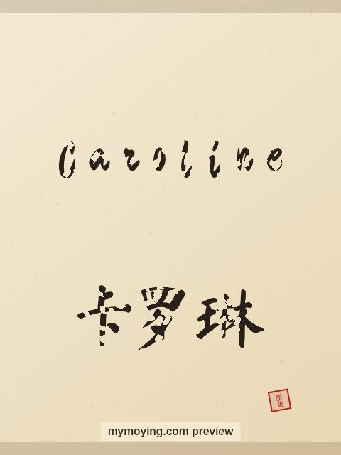

Caroline in Chinese Calligraphy
Curious how Caroline looks in Chinese brush calligraphy? This page shows the name, its Chinese transliteration 卡罗琳 (Kǎ luó lín), and the story behind it.

Sample. “Caroline” in the Regular (楷书) brush style with the Chinese name 卡罗琳 (Kǎ luó lín). The paid file removes the watermark.
The Chinese characters for Caroline
As a transliteration, Caroline is usually written 卡罗琳 (Kǎ luó lín). Each character is listed below with its own dictionary meaning — the name is chosen by sound, not by meaning, and Moying does not translate names. Please have a person review the characters before any permanent use such as a tattoo.
Origin and meaning
With French origins, Caroline is usually read as “free man (feminine of Charles)”.
About the name Caroline
A French feminine of Charles, and the title of a Neil Diamond song.
As a gift or a tattoo
If you are choosing a name for a print or a tattoo, Caroline carries the meaning “free man (feminine of Charles)” and looks striking in brush strokes.
Open Caroline in the generatorFree watermarked preview. $1.99 once for a clean high-resolution download of this name in every style and setting. No subscription. Digital product, delivered instantly; see Terms.